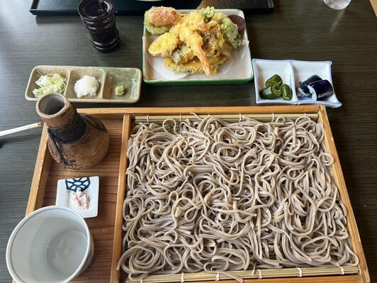
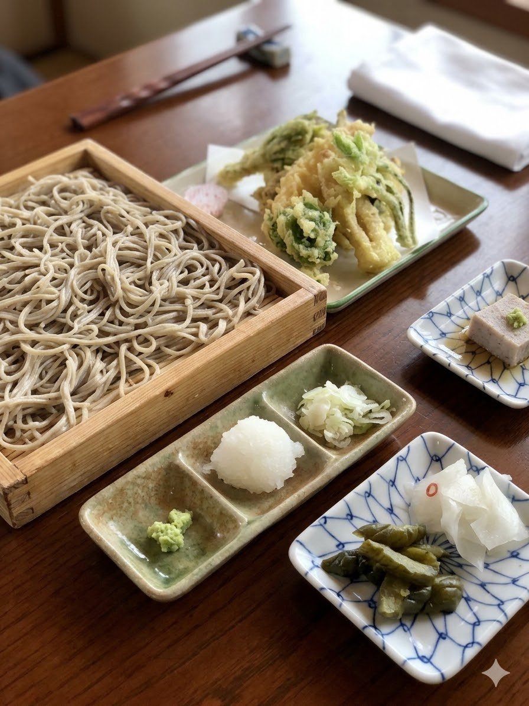
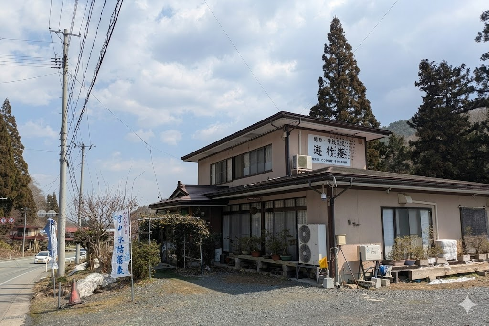
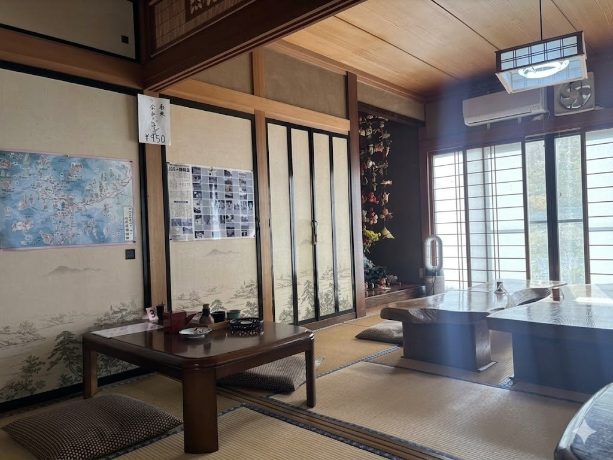
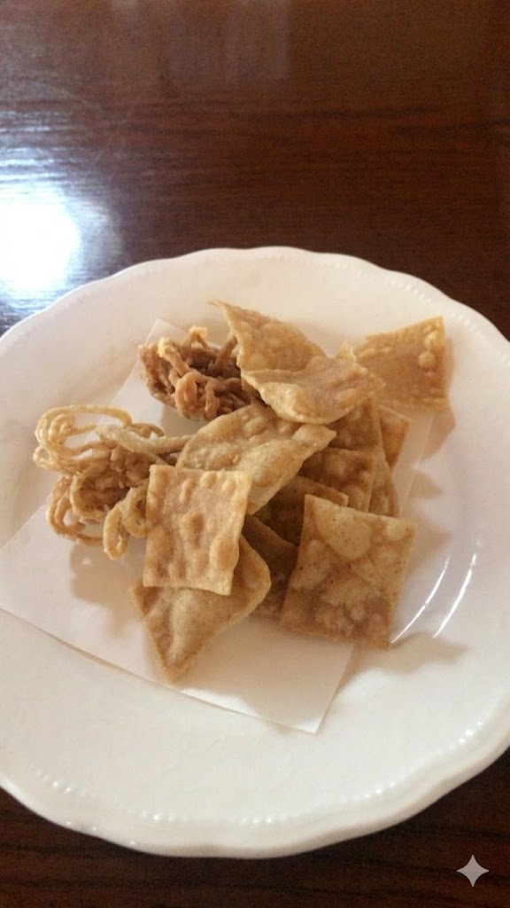
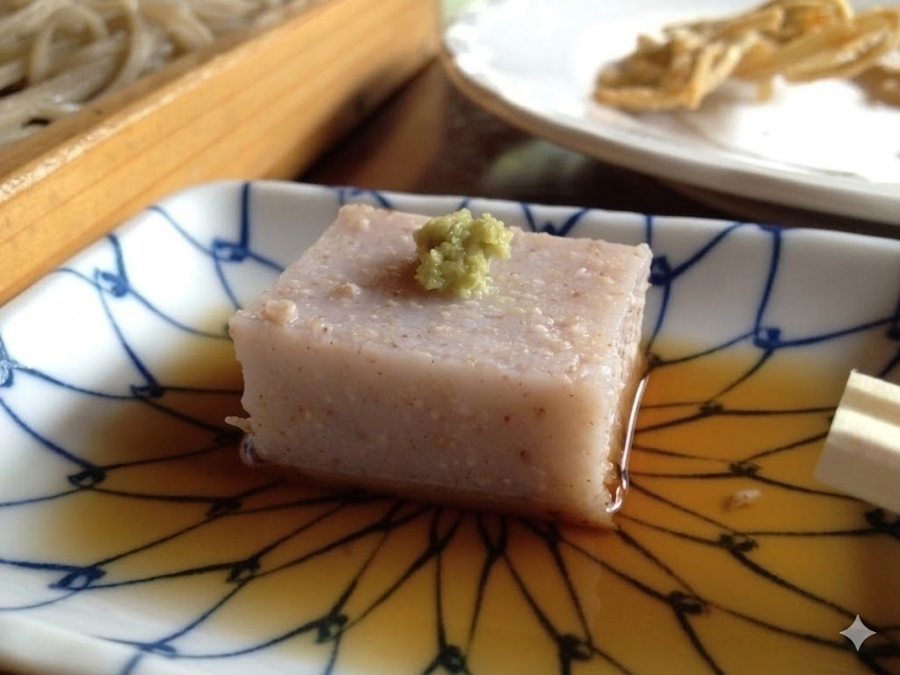
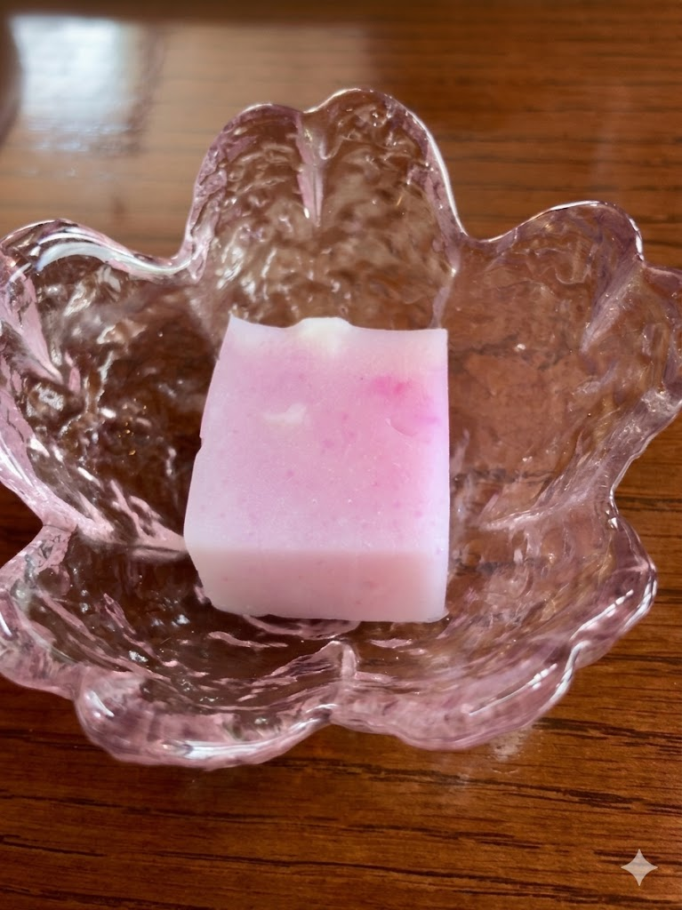
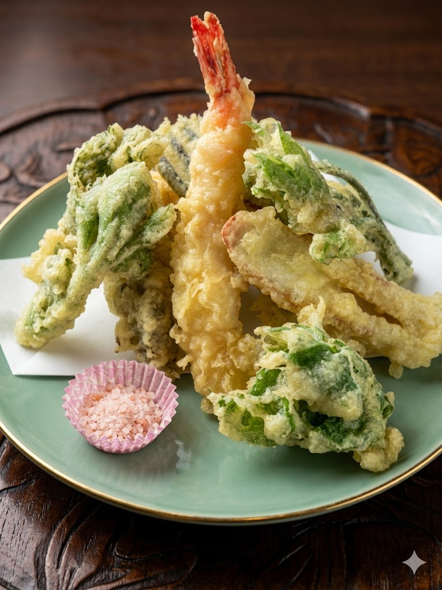

板そば並盛1,000円に、揚げそば・そば豆腐・デザート付き。
「信じられない」と評される驚異のコスパ。
田園に囲まれた家庭的な手打ちそば店。
上山市の田園に囲まれた静かな一軒家そば店。
家庭的な温かさと、驚異のコストパフォーマンス。
板そば並盛1,000円に揚げそば・そば豆腐・デザートが付く、
「これで1,000円は信じられない」と評される太っ腹セット。
田園に囲まれた静かな立地で、家庭的な温かさが感じられるそば処です。
素朴で飽きのこない手打ちそば。そば本体のクオリティも確かな一品。
揚げそば・そば豆腐・デザート付きで1,000円。「信じられない」内容。
田園に囲まれた静かな一軒家。家庭的な温かさが感じられる空間。
揚げそば・そば豆腐・デザート付きで1,000円。
「信じられない」と評される、そば尽くしの太っ腹セット。

板そばを注文すると、提供までの間に「揚げそば」と「そば豆腐」をサービス。これだけでも一品料理としてしっかり楽しめる内容で、そばが茹で上がる前からそばの世界観を味わえる構成です。
さらに食後のデザート（そばがきぜんざい、黒ゴマアイス、シャーベットなど）が付いて1,000円。山形・上山エリアの中でも突出したコストパフォーマンスで、そば好きがわざわざ足を運ぶ価値のある一品です。
提供前に揚げそばとそば豆腐をサービス。一品料理としても楽しめる内容で「サービス満点」。
そばがきぜんざい、黒ゴマアイス、シャーベットなどのデザート付き。「信じられない」コスパ。
サービス品に負けないそば本体のクオリティ。そば尽くしで最初から最後まで楽しめる。
田園に囲まれた一軒家そば店。
そば尽くしのおもてなしをご紹介。






上山市狸森、田園に囲まれた静かな立地。
山交バス「岩の下」から徒歩約5分、昼のみ営業。
板そば並盛1,000円に、揚げそば・そば豆腐・デザート付き。
「信じられない」と評される驚異のコスパ。
田園に囲まれた家庭的な手打ちそば店で、そば尽くしを。
※営業時間: 11:00〜15:00（昼営業のみ）
※定休日: 木曜日
※田園に囲まれた静かな立地